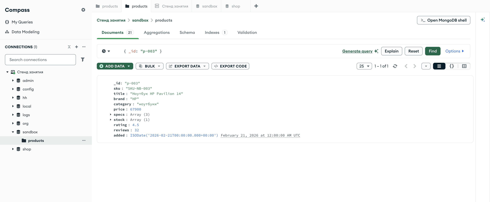

Справочник по MongoDB · модуль 1 · подключение и первые данные
Глава 1.7
Обновление
документов
Третья операция — изменить то, что уже лежит в базе. Разберём операторы $set, $inc и $unset, поймём разницу между «нашлось» и «изменилось», научимся менять пачку документов одним запросом и увидим, что делает upsert.
«Обновление без фильтра меняет всю коллекцию.»
- Категория
- Операции над данными
- Уровень
- Начальный
- Связанные темы
- Вставка, удаление, операторы фильтра
- Зачем это знать
- Менять данные точечно и понимать, что именно изменилось
§1Два документа: кого и что
У любого обновления два аргумента, и оба — документы:
find, — со всеми его правилами.кого$set, $inc, $unset и других.чтоМетодов тоже два: update_one меняет первый подходящий документ, update_many — все подходящие. Разница в одном слове, а последствия разные: если фильтр случайно подошёл к сотне документов, update_one испортит один, а update_many — сто.
Работаем, как и в главе о вставке, в песочнице:
box = client["sandbox"]["products"]
§2$set: задать значение
Оператор $set записывает значение в поле. Если поля не было — оно появится, если было — заменится. Остальные поля документа не тронуты.
res = box.update_one( {"_id": "p-101"}, {"$set": {"price": 2690}}) print("matched:", res.matched_count, "modified:", res.modified_count)
db.products.updateOne( { _id: "p-101" }, { $set: { price: 2690 } })
matched: 1 modified: 1
Одним $set можно задать сразу несколько полей, в том числе вложенных — через точку:
orders_box.update_one( {"_id": "o-0001"}, {"$set": { "status": "доставлен", "payment.paid": True, # поле внутри вложенного документа "delivery.days": 2, }})
Запись {"$set": {"payment": {"paid": True}}} не поменяет одно поле — она заменит весь вложенный документ payment на новый, в котором есть только paid. Способ оплаты при этом исчезнет. Чтобы изменить одно поле внутри, путь пишут через точку: "payment.paid".
§3matched против modified
Результат обновления возвращает два числа, и означают они разное.
res = box.update_one({"_id": "p-101"}, {"$set": {"price": 2690}}) print("matched:", res.matched_count, "modified:", res.modified_count)
matched: 1 modified: 0
| matched | modified | Что это значит |
|---|---|---|
| 1 | 1 | Документ найден и изменён — обычный успешный случай |
| 1 | 0 | Документ найден, но в поле уже лежало это же значение. Запись не понадобилась |
| 0 | 0 | Фильтр не подошёл ни к одному документу. Менять было нечего |
Проверять нужно matched_count, а не modified_count. API, который отвечает «объект не найден» по нулевому modified, ошибается каждый раз, когда пользователь сохранил форму, ничего в ней не изменив.
§4$inc и $unset
$set — не единственный оператор. Два других нужны почти так же часто.
res = box.update_one( {"_id": "p-003"}, {"$inc": {"reviews": 1}, "$unset": {"discount": ""}}) print(box.find_one({"_id": "p-003"}, {"title": 1, "reviews": 1, "discount": 1}))
matched: 1 modified: 1
{'_id': 'p-003', 'title': 'Ноутбук HP Pavilion 14', 'reviews': 32}
Было 31 отзыв, стало 32; поля discount в документе больше нет — не null, а именно нет. Разница существенная: {"discount": {"$exists": False}} найдёт такой товар, а {"discount": None} — нет.
Способ «прочитать, прибавить, записать» теряет данные при одновременной работе: два процесса прочитают 31, оба запишут 32, и один отзыв пропадёт. $inc выполняется на сервере одним неделимым действием, поэтому такой потери не будет.
Ещё три оператора обновления: $min и $max записывают значение, только если оно меньше (больше) текущего, $rename переименовывает поле. Операторы для массивов — $push, $pull, $addToSet — разберём после главы о массивах в фильтрах.
§5update_many: пачкой
Одинаковая правка для всех подходящих документов — это update_many. Форма та же, меняется только метод.
res = box.update_many( {"category": "аксессуары"}, {"$set": {"free_shipping": True}}) print("matched:", res.matched_count, "modified:", res.modified_count)
matched: 6 modified: 6
Шесть документов: три исходных аксессуара, коврик и две позиции, добавленные в главе о вставке. Поле free_shipping появилось у них и только у них — остальные товары не изменились.
Перед любым update_many выполняют count_documents с тем же фильтром. Число показывает, скольких документов коснётся правка, до того как она произойдёт. Ожидали шесть, а видите шестьсот — фильтр написан не так, как задумано.
query = {"category": "аксессуары"}
print("будет изменено:", box.count_documents(query)) # 6
box.update_many(query, {"$set": {"free_shipping": True}})
§6upsert: обновить или создать
Параметр upsert=True говорит: «если документ не нашёлся — создай его». Один запрос вместо связки «проверить, потом вставить».
res = box.update_one( {"_id": "p-999"}, {"$set": {"title": "Товар из upsert", "price": 100}}, upsert=True) print("matched:", res.matched_count, "modified:", res.modified_count, "upserted_id:", res.upserted_id)
matched: 0 modified: 0 upserted_id: p-999
Ноль совпадений, ноль изменений — и новый документ. Ключ _id взят из фильтра: при вставке через upsert сервер собирает документ из полей фильтра с точным равенством и полей из $set.
Применение: счётчики и агрегаты, которые пишутся «на лету». Например, счётчик просмотров товара за день — не нужно проверять, есть ли уже запись за сегодня:
stats.update_one( {"product_id": "p-003", "date": today}, {"$inc": {"views": 1}}, upsert=True)
§7Обновление без операторов
Если забыть $set и передать просто документ, PyMongo вернёт ошибку:
ValueError: update only works with $ operators
Метод replace_one при этом заменяет документ целиком. Все поля, которых нет в новом документе, исчезают; сохраняется только _id.
| Метод | Что происходит с полями, которых нет в запросе | Когда применяют |
|---|---|---|
update_one с $set | Остаются как были | Почти всегда: точечная правка |
replace_one | Удаляются | Когда клиент прислал документ целиком и он — источник истины |
Ошибка «сохранили форму — половина полей пропала» — это почти всегда replace_one там, где нужен был $set.
§8Правка документа в Compass
В Compass документ правится прямо в списке: наведите на него курсор и нажмите карандаш. Поля меняются на месте, можно добавить новое или удалить существующее.

sandbox.products после $inc и $unset: отзывов стало 32, поля discount в документе больше нет — не null, а именно нетТот же документ можно поправить и мышью — прямо в списке:
$set. Рядом — Cancel, чтобы отказаться.шаг 3Это удобный способ разобраться с оператором: поправьте документ мышью, посмотрите, что получилось, — а потом напишите то же самое запросом. Правка мышью хороша для разбора и для единичного исправления; всё, что делается больше одного раза, должно быть запросом в коде.
Результат запроса из §4, где мы прибавили отзыв и сняли скидку:
sandbox.products после $inc и $unset: reviews: 32, а строки discount в документе больше нетПоля discount на кадре нет вовсе: оно не стало пустым и не превратилось в null, а исчезло из документа. Так работает $unset; поэтому такой товар найдётся по фильтру {"discount": {"$exists": False}}.
§9Частые ошибки
| Что написано | Что происходит | Как правильно |
|---|---|---|
update_one({...}, {"price": 100}) | ValueError: update only works with $ operators | {"$set": {"price": 100}} |
{"$set": {"payment": {"paid": True}}} | Вложенный документ заменён целиком, остальные его поля потеряны | {"$set": {"payment.paid": True}} |
Проверка результата по modified_count | «Не найдено» при сохранении без изменений | Проверять matched_count |
update_many({}, {...}) | Изменены все документы коллекции | Пустой фильтр — только осознанно; сначала count_documents |
replace_one вместо update_one | Поля, которых нет в новом документе, исчезли | update_one с $set |
| Прочитать, прибавить в Python, записать | При одновременной работе изменения теряются | $inc — сервер выполнит это неделимо |
§10Проверьте себя
Результат: matched: 1, modified: 0. Что произошло?
Документ нашёлся, но менять было нечего: в поле уже лежало то же значение. Это успех, а не ошибка.
Чем {"$set": {"delivery.city": "Москва"}} отличается от {"$set": {"delivery": {"city": "Москва"}}}?
Первый меняет одно поле внутри delivery, остальные его поля сохраняются. Второй заменяет весь вложенный документ — type и days будут потеряны.
Почему счётчик просмотров стоит увеличивать через $inc, а не читать и записывать из кода?
Потому что между чтением и записью значение может изменить другой процесс, и одно из увеличений потеряется. $inc выполняется на сервере одним неделимым действием.
Что делает upsert=True, если документ не найден, и откуда берётся его _id?
Создаёт новый документ из полей фильтра с точным равенством и полей обновления. Ключ берётся из фильтра, если он там задан; иначе сервер сгенерирует ObjectId. Номер созданного документа возвращается в upserted_id.
Как удалить поле из документа и чем это отличается от записи None?
Удаляет $unset: {"$unset": {"discount": ""}}. После него поля в документе нет — его найдёт {"discount": {"$exists": False}}. Запись None оставляет поле со значением null, и это разные состояния.
§11Шпаргалка
col.update_one(
{"_id": "p-101"},
{"$set": {"price": 2690}})
{"$inc": {"reviews": 1}}
{"$unset": {"discount": ""}}
col.update_many(
{"category": "аксессуары"},
{"$set": {...}})
col.update_one(query, upd,
upsert=True)
res.upserted_id
Итог главы
Обновление — это два документа: фильтр «кого» и операторы «что». $set задаёт значение, $inc прибавляет неделимо, $unset убирает поле. update_one меняет первый подходящий документ, update_many — все, поэтому фильтр стоит сначала проверить счётчиком. Проверять результат нужно по matched_count: ноль изменений не значит «не найдено». Осталась последняя из четырёх операций — удаление.